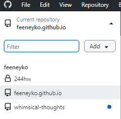

Creating a Website With Github Pages and Hugo
本文介绍了这个博客时如何搭建的。
1 参考这篇文章
如何用 GitHub Pages + Hugo 搭建个人博客 by 小绵尾巴
两点没有提到的：
-
在第六步安装和配置主题时，可能需要按需修改
.toml文件的名字，否则可能无法预览 -
根据
exampleSite内的 content 来修改archetypes文件内的内容；防止以后创建文章.md内自动生成的文章信息错误
2 如果在第九步设置SSH时卡住了
可以尝试以下步骤。
-
确保 GitHub Pages 仓库的名字是 [username].github.io
-
一直按照上面的教程做完第 6.4 步，输完下面的命令
git remote add origin [...] -
进入
~\public\.git，修改config文件，在原本填的SSH的位置放入HTTPS
-
下载安装 GitHub Desktop。图形界面很简单，乱点一通或者随便搜下就能设置好。
-
点击左上角工具栏下方的第一个大按钮，选择
Add existing ...
-
添加之前准备好的
public文件夹。GitHub Desktop 建议你按的按钮应该会有很显眼的提示。一顿瞎按，转到 GitHub 查看 GitHub Pages 仓库中是否存在刚刚推送的文件，存在则代表推送成功。以后每次写完只要打开 GitHub Desktop 一顿瞎按就好。
3 （可选）设置自定义域名
4 其他
- 页面可能不显示修改后内容，可以开隐身模式查看
- 图片显示不出来：可以修改
content内文件目录，查看public文件夹根据content所生成的内容，同时在网页上查看图片所引用(view page source)的位置，最后在.md内调整图片引用或者在content调整图片位置。 - TODO: 翻译功能，修改字体（大概率都不会实现）
Last modified on 2024-05-22
Comments Disabled.